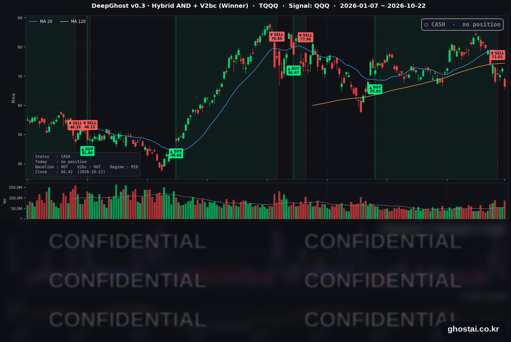

나스닥 -2.60%, 고스트 전략은 사흘 전 전량 매도
· Ghost.AI 데일리 리포트
👻 매일 시그널과 히스토리를 홈페이지에서 한눈에 → www.ghostai.co.kr
회원 페이지 안내 — 회원 가입하시면 커버리지 전 종목의 원본 시그널과 분석 레포트를 매일 확인하실 수 있습니다. 회원 페이지는 블로그·유튜브보다 먼저 업데이트됩니다. 지금 베타 회원을 받고 있으며, 이메일과 필명만으로 가입하실 수 있고 서비스 사용료는 받지 않습니다. 이메일 확인 후 바로 이용하실 수 있습니다.
한 줄 요약: 목요일 미국 증시는 AI 관련 하드웨어주가 크게 내려 나스닥 종합이 2.60%, S&P 500 이 1.21% 내렸지만, S&P 500 구성종목의 68%는 올랐습니다. 10년물 국채 금리는 19.3bp 내려 5% 아래로 돌아왔고, VIX 는 19.03 으로 올랐습니다. 전략은 현금 보유 나흘째이며, 오늘 새 신호는 없습니다.
📊 오늘의 매매 신호
| 항목 | 내용 |
|---|---|
| 오늘의 신호 | 🟡 신규 신호 없음 — 전략은 현금 보유를 유지합니다 |
| 포지션 상태 | 💵 현금 보유 중 (OUT OF POSITION) |
| 현금 보유 기간 | 2026-10-19 ~ (4일째) |
| TQQQ 종가 | $66.42(-8.52%) |
TQQQ 시그널 — OUT OF POSITION
현재 상태: 현금 보유 중 | 신규 신호 없음

전략은 10월 19일(월) 미국 장 시가 71.01달러에 TQQQ 를 매도한 뒤 현금 보유 나흘째입니다. 직전 거래는 8월 6일 시가 70.85달러에 매수해 51거래일 보유했고, 전략 수익률은 +0.23% 였습니다.
TQQQ 는 10월 22일 8.52% 내린 66.42달러로 마감했습니다. 6월 23일 이후 가장 큰 하루 하락이고 7월 31일 이후 가장 낮은 종가이며, 매도 가격보다 6.46% 낮습니다.
전략의 신호는 나스닥 100 지수를 따르는 QQQ 를 기준으로 나옵니다. 이날 S&P 500 구성종목 대부분이 올랐지만 QQQ 는 2.86% 내렸습니다. 전략은 새 신호 없이 현금 보유를 이어 갑니다.
오늘 미국 시장 — 시황 요약
지수 마감
| 지수 | 종가 | 등락률 |
|---|---|---|
| S&P 500 | 7,663.43 | -1.21% |
| 나스닥 종합 | 26,008.86 | -2.60% |
| 다우존스 | 52,867.98 | +0.02% |
| 러셀 2000 (IWM) | 276.67 | +0.07% |
| QQQ (나스닥100) | 704.47 | -2.86% |
| TQQQ | 66.42 | -8.52% |
| 반도체 ETF (SOXX) | 475.69 | -6.79% |
하락은 시가총액이 큰 기술주, 그중에서도 AI 관련 하드웨어주에 몰렸습니다. 나스닥 종합은 6월 5일 이후, S&P 500 은 7월 29일 이후 하루 하락 폭이 가장 컸고, QQQ·TQQQ·SOXX 는 6월 23일 이후 가장 크게 내렸습니다. 반면 다우와 러셀 2000(IWM)은 보합이었습니다. 사상 최고 종가를 낸 지수는 없고, S&P 500 은 10월 6일 최고 종가보다 1.99% 낮습니다.
국채 금리 동향
| 만기 | 10/21 종가 | 10/22 종가 | 전일 대비 |
|---|---|---|---|
| 3개월 | 4.063% | 4.022% | -4.1bp |
| 5년 | 4.972% | 4.768% | -20.4bp |
| 10년 | 5.146% | 4.953% | -19.3bp |
| 30년 | 5.439% | 5.287% | -15.2bp |
10년물은 19.3bp 내려 2023년 3월 10일 이후 하루 하락 폭이 가장 컸고, 9월 22일 이후 처음 5% 아래에서 마감했습니다. 5년물과 30년물은 2024년 8월 2일 이후 가장 크게 내렸습니다. 신규 실업수당 청구 건수가 19.4만 건으로 예상(20.0만 건)보다 적었고 유가도 올랐지만, 주가가 내리는 동안 국채로 매수세가 몰렸습니다. 10년물과 3개월물의 차이는 93.1bp(전일 108.3bp)로 줄었고 역전은 없습니다. 재무부 자료 기준 2년물은 4.81%에서 4.65%로 내렸습니다. 금리가 크게 내린 날에도 대형 기술주는 내렸고, 주택건설·부동산·유틸리티처럼 금리에 민감한 업종은 올랐습니다.
연준 발언 & 금리 패스
- 발언 없음 — 연준은 10월 17일(토)부터 10월 29일(목)까지 FOMC 전후 발언 금지 기간입니다.
- 발언은 없었지만 금리 선물은 인상 기대를 크게 줄였습니다. 로이터가 전한 CME FedWatch 기준 다음 주 회의의 금리 인상 확률은 7.2% 로, 1주 전 27.7%에서 내려왔습니다.
- 정책금리는 3.75~4.00%입니다. FOMC 는 10월 27~28일에 열리고, 금리 결정은 28일(수) 오후 2시(미 동부), 기자회견은 30분 뒤입니다.
오늘의 핵심 이슈
- AI 관련 하드웨어주가 크게 내렸지만 S&P 500 구성종목 494개 중 338개(68%)는 올랐습니다. 반도체·반도체 장비·광통신 부품·전력 설비·데이터센터 리츠 등 AI 하드웨어 관련 52종목의 등락률 중간값은 -5.37%, 나머지 442종목은 +2.09%였습니다. 필수소비재는 32종목이 모두 올랐습니다. 현재 구성종목으로 계산하면, S&P 500 이 1% 넘게 내린 날 구성종목 3분의 2 이상이 오른 것은 2025년 1월 27일(딥시크 충격으로 엔비디아가 17% 가까이 내린 날) 이후 처음입니다.
- 메타 실적과 램리서치 전망이 나온 뒤 AI 투자 비용 부담이 다시 부각됐습니다. 보도에 따르면 메타는 3분기 매출이 예상을 웃돌았지만 올해 설비투자 전망 하단을 1,300억 달러에서 1,350억 달러로 올렸고, 분기 잉여현금흐름은 -21억 달러로 10여 년 만에 마이너스였습니다. 주가는 6.98% 내렸습니다. 반도체 장비업체 램리서치는 공급망 제약이 없었다면 12월 분기 매출 전망이 더 높았을 것이라고 밝힌 뒤 11.76% 내렸습니다. 로이터와 AP 는 데이터센터 투자에 드는 차입 비용과 투자 회수 시점에 대한 우려를 하락 이유로 들었습니다.
- 10년물 금리가 5% 아래로 돌아왔습니다. 고용 지표가 견조했는데도 금리가 크게 내렸고, 다음 주 FOMC 의 금리 인상 확률도 함께 낮아졌습니다. 보도들은 기술주 하락의 이유로 금리가 아니라 AI 투자 비용과 자금 조달 우려를 들었습니다.
변동성 & 투자심리
VIX 는 14.09% 오른 19.03 으로 10월 16일 이후 가장 높은 종가를 기록했습니다. CNN 공포탐욕지수는 19.8 로 전일(31.4)에서 내려 '극단적 공포' 구간에 들어갔고, CNN 기록 기준 4월 2일 이후 가장 낮습니다. 7개 구성지표 중 6개가 '극단적 공포'입니다.
매크로 & 원자재
| 품목 | 종가 | 등락률 |
|---|---|---|
| 원유 ETF (USO) | $162.51 | +1.70% |
| 금 ETF (GLD) | $369.00 | -2.63% |
- 유가: USO 는 사흘 만에 올라 올해 들어 가장 높은 종가로 마감했습니다.
- 금: GLD 는 9월 28일 이후 가장 크게 내렸고, 7월 20일 이후 가장 낮은 종가입니다.
주요 종목 동향
| 종목 | 종가 | 등락률 | 비고 |
|---|---|---|---|
| NFLX | 67.05 | +3.09% | 9/14 이후 가장 큰 상승 |
| AAPL | 348.22 | +1.23% | 사상 최고 종가 (이틀 연속) |
| MSFT | 521.08 | -2.23% | |
| QCOM | 172.83 | -2.88% | |
| TSLA | 374.58 | -3.08% | 실적 다음 날 |
| GOOGL | 324.22 | -3.15% | 7/24 이후 최저 종가 |
| AVGO | 323.24 | -4.31% | |
| NVDA | 212.21 | -4.40% | 8/28 이후 가장 큰 하락 |
| AMZN | 250.38 | -4.57% | |
| MU | 856.49 | -6.26% | 8/18 이후 가장 큰 하락 |
| META | 648.85 | -6.98% | 실적 다음 날, 7/30 이후 가장 큰 하락 |
| INTC | 85.49 | -8.04% | 7/7 이후 가장 큰 하락 |
커버리지 12종목 중 10종목이 내렸습니다. 오른 종목은 AAPL·NFLX 둘이고, 반도체 종목과 메타의 하락 폭이 컸습니다.
다음 일정 (미 동부시간)
- 10/23(금) 09:45 S&P Global 10월 제조업·서비스업 PMI 잠정치 / 10:00 미시간대 10월 소비자심리 확정치
- 10/27~28 FOMC, 금리 결정 28일(수) 14:00, 기자회견 14:30 (발언 금지 기간 10/17~10/29)
- 10/29(목) 장 마감 후 인텔 3분기 실적
Ghost.AI — Quantitative AI Investment
Model: DeepGhost v0.3 | Transformer-Based Deep Learning
Coverage: 14 tickers | Updated every trading day after US market close
⚠️ 본 자료는 정보 제공 목적으로만 작성되었으며 투자 권유가 아닙니다. 모든 투자의 책임은 투자자 본인에게 있습니다. 과거 성과가 미래 수익을 보장하지 않습니다.
[유의사항]
- 본 서비스는 불특정 다수를 대상으로 발행되는 단방향 정보 제공 서비스이며, 투자자 개인의 재산 상황·투자 목적·위험 선호도를 반영한 개별 투자 조언이 아닙니다.
- 고스트에이아이 주식회사는 고객과 쌍방향 의사소통(개별 상담, 맞춤형 자문 등)을 제공하지 않습니다.
- 본 콘텐츠는 투자 권유 또는 매매 주문의 청약·청약의 권유에 해당하지 않으며, 최종 투자 판단 및 그에 따른 손익의 책임은 전적으로 투자자 본인에게 있습니다.
고스트에이아이 주식회사